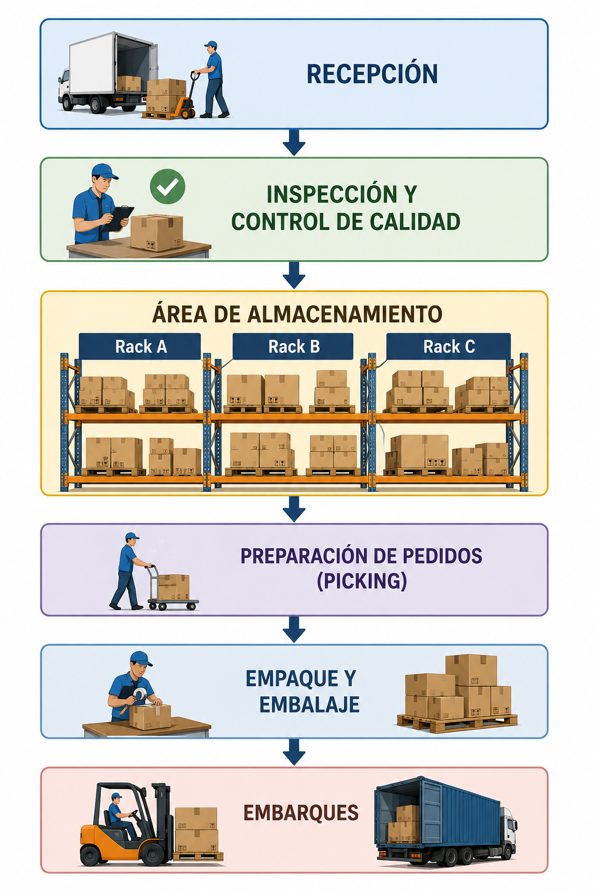

Unidad II · Tema 2.3
Diseño (Layout) de un almacén
El layout es la distribución y organización de trabajo dentro del almacén. Su objetivo principal es minimizar recorridos, optimizar espacios y facilitar el flujo continuo de materiales.
Distribución básica del flujo operativo
Un diseño eficiente organiza secuencialmente las etapas desde la descarga hasta el embarque final:

Principios de un buen layout
Al proyectar o reestructurar una bodega textil deben respetarse los siguientes criterios técnicos:
- Recorridos cortos: Disminución drástica de las distancias recorridas por operarios y montacargas.
- Aprovechamiento del espacio: Uso óptimo del volumen cúbico y vertical del inmueble.
- Seguridad del personal: Delimitación de pasillos peatonales, señalización y protección contra incendios.
- Fácil identificación de productos: Codificación visible para rollos, hilados y prendas.
- Accesibilidad: Posibilidad de extraer cualquier lote sin tener que desplazar otros innecesariamente.
- Posibilidad de crecimiento: Modularidad para futuras ampliaciones de volumen o líneas de producto.
Comprueba tu comprensión
¿Cómo evita un layout de almacén bien diseñado los cuellos de botella en la zona de picking durante temporadas altas de confección?
Caso de estudio: Empresa "Moda ESIT"